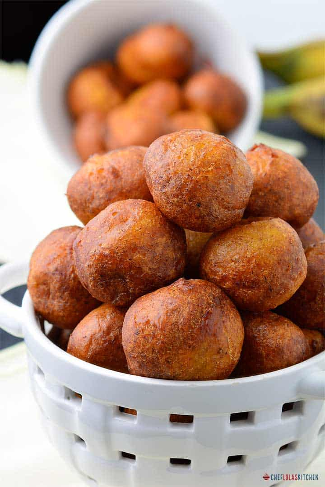

Puff-Puff

Puff-Puff is a traditional snack made of fried dough and eaten across Africa, especially in the west of the
continent.
The name "puff-puff" is from Nigeria, but many other names and varities of the pastry exist.
Ghanaians call it Bofrot (togbei), Cameroonians also call it puff-puff or beignet in French, Botokoin in Togo,
Bofloto in Ivory Coast, Mikate in Congo, Micate or Bolinho in Angola, Legemat in Sudan, Kala in Liberia, and
Vetkoek, Amagwinya, or Magwinya in South Africa and Zimbabwe
Ingredients for Puff-puff
Steps
- Mix half a cup of warm water, 1 teaspoon of sugar and the yeast in a bowl. Cover with a lid and set aside
until the yeast becomes bubbly.(About 4-6 minutes).
- In another bowl, mix the dry ingredients - Flour, Sugar,Salt, and Nutmeg.
- Pour the Proofed yeast and the remaining one cup of water together with the dry ingredients and mix until
the batter is lump-free.
- Cover the dugh and allow it to rise for 1 hour. (The risen dough has a distinct sweet smell, which will make
you know the dough is ready for frying).
- Preheat the oil in a pan deep and wide enoughto accomodate the puff-puff balls and scoop a little bit of
dough and drop the batter by spoonfuls into the oil.
- Fry both sides until golden brown. if you're finding it hard to turn the puff-puff while frying you can just
press down the balls a little bit with your frying spoon beforeturning it.
- Remove from heat. Drain on a paper towek and enjoy while still hot or warm.